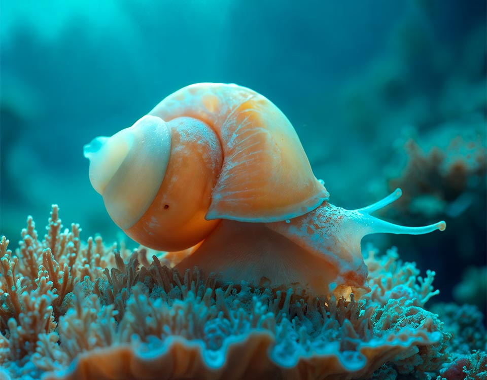
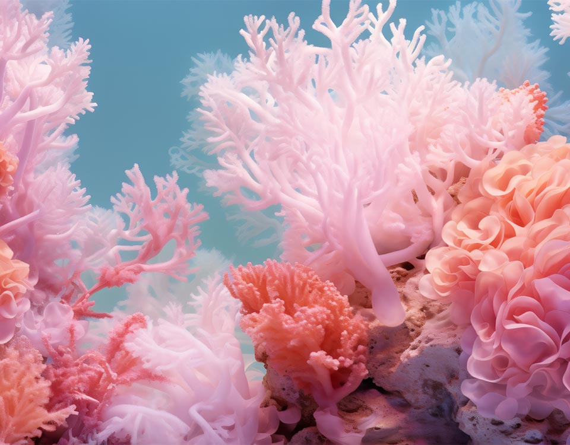
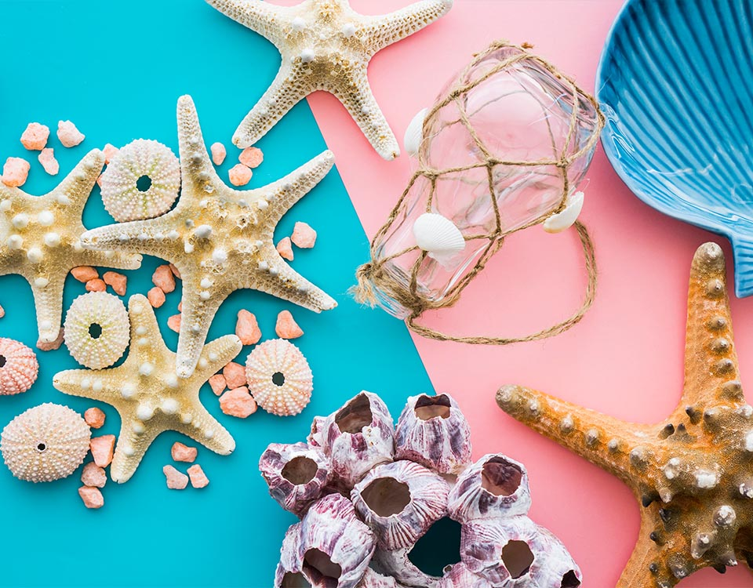
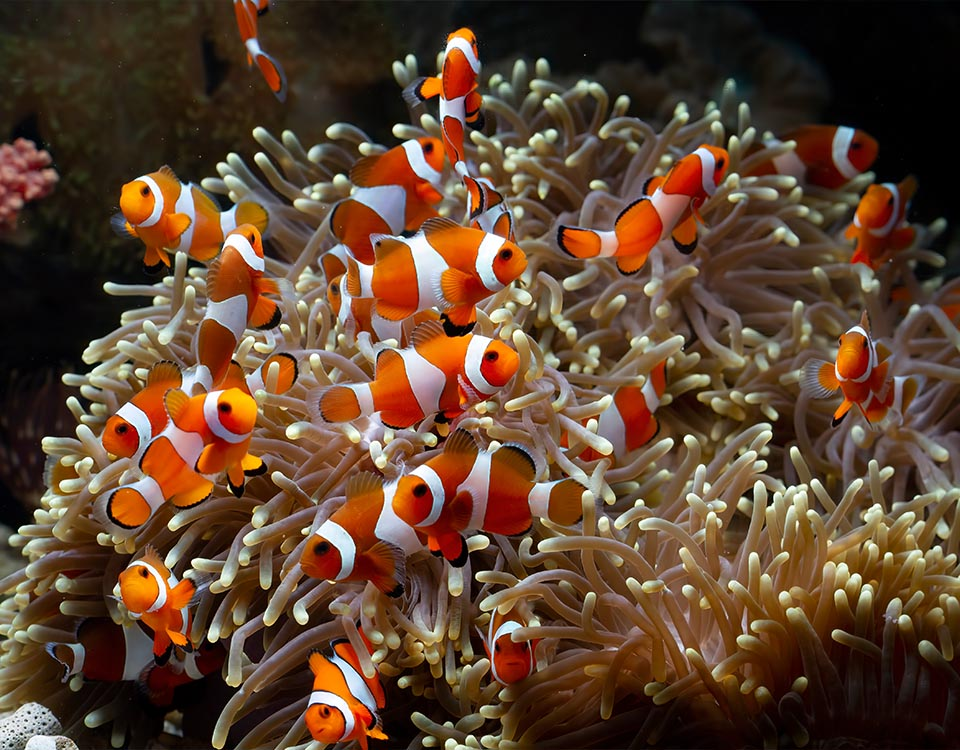

超過 70%。
地球的表面約有 71% 是由海洋所覆蓋，這也是為什麼地球常被稱為「藍色星球」的原因。這些海洋不僅是美麗的自然景觀，更是氣候、天氣系統和生命支持系統的關鍵。海洋中的水體對太陽能有強大的儲存與調節作用，能幫助穩定地球氣溫。此外，海洋藻類與浮游植物能進行光合作用，提供超過 50% 的地球氧氣，甚至比熱帶雨林還多。從太空看地球，大多數視野都是藍色的海水，足見其廣大程度。這些海洋也支撐著龐大的海洋生態系統與無數的生物，是我們生活中不可或缺的重要資源。
珊瑚是動物。
很多人誤以為珊瑚像植物，其實牠們是動物，屬於刺絲胞動物門，與水母和海葵是近親。珊瑚是由無數微小的珊瑚蟲組成，每隻珊瑚蟲都有觸手、口與胃，並會從海水中捕捉浮游生物為食。牠們還與一種稱為「蟲黃藻」的單細胞藻類共生，這些藻類在珊瑚體內進行光合作用，產生的營養能供給珊瑚使用。這樣的共生關係讓珊瑚可以在營養稀少的熱帶海域生存並建造出壯觀的珊瑚礁。珊瑚礁是極其重要的海洋生態系統，有「海中雨林」之稱，孕育著上萬種生物，是地球生物多樣性的重要堡壘。
章魚有三顆心臟！
章魚的血液循環系統非常特別，牠們擁有三顆心臟。其中兩顆「鰓心臟」負責將缺氧的血液泵送到鰓進行氧氣交換，第三顆「系統心臟」則將含氧血液送往全身。這樣的設計有助於章魚在深海低溫、低氧環境中維持身體機能。值得一提的是，章魚的血液是藍色的，因為牠們的血紅素成分是銅基的「血藍素」，與我們的鐵基血紅素不同。這樣的血液在低溫下比人類血液更有效率地運輸氧氣。當章魚快速游動時，牠的系統心臟會暫停跳動，因此章魚偏好爬行或躲藏，這也讓牠們成為擅長偽裝的捕獵者與逃生者。
因為水會吸收紅光，藍光容易反射。
海水呈現藍色，其實是光線在水中傳播時的結果。當太陽光照射到海面上，光線會進入水中並被吸收與散射。水分子對紅色、橙色和黃色等波長較長的光吸收得比較快，而波長較短的藍色光會穿透得更深、反射得更強，因此我們從水面上看到的是藍色的海洋。此外，如果海水中有浮游生物、礦物或污染物，也會改變顏色，有些海域可能呈現綠色或褐色。值得注意的是，海水本身是幾乎透明的，只是在深度足夠大時才會產生強烈的色彩感。這也是為什麼近海常呈現淺藍或綠色，而遠洋海域則是深邃的藍。
太平洋。
太平洋是地球上面積最大、最深的海洋，占全球海洋面積的一半以上。它的面積超過 1.6 億平方公里，甚至比整個地球的陸地面積還要大。太平洋橫跨亞洲與美洲之間，北至白令海，南到南極洲。其最深處是「馬里亞納海溝」，深達約 11,000 公尺，相當於 36,000 英尺，是地球上已知最深的海洋地點。太平洋也是地震與火山活動頻繁的區域，被稱為「環太平洋火環」，許多地震與海嘯都發生在此地帶。儘管太平洋如此壯觀，近年來也面臨嚴重的塑膠污染問題，像是「太平洋垃圾帶」的規模已經引起全球關注。
肺；鯨魚是哺乳類，必須定時浮出水面換氣。
鯨魚雖然生活在海洋中，卻和人類一樣是用肺呼吸的哺乳類動物。牠們沒有魚鰓，必須定期浮出水面，透過頭頂的噴氣孔換氣，才能維持正常的呼吸機能。不同種類的鯨魚潛水時間長短不一，抹香鯨甚至可以潛水超過90分鐘才需要換氣。由於是哺乳類，鯨魚也以乳汁哺育幼鯨，並具有相對複雜的社會行為與溝通方式，例如座頭鯨著名的「鯨歌」。
公海馬；海馬是少數由雄性負責懷孕育幼的動物。
在海馬的世界裡，孕育後代的工作是由公海馬負責！母海馬會將卵產入公海馬腹部的育兒袋中，由公海馬提供養分並保護受精卵，直到小海馬孵化出生為止。這種角色分工在動物界相當罕見，也讓海馬成為海洋生物中極具代表性的特殊物種。海馬游泳能力較弱，主要依靠尾巴纏繞海藻或珊瑚固定身體，避免被海流沖走。
高潮線與低潮線之間，隨潮汐漲落時而露出、時而淹沒的海岸區域。
潮間帶是介於高潮線與低潮線之間的海岸地帶，會隨著潮汐漲落而時而露出水面、時而被海水淹沒。這裡環境變化劇烈，生物必須適應日曬、乾燥、鹽度變化與海浪衝擊，因此演化出許多特殊的生存策略，例如躲藏在石縫或沙地中。潮間帶孕育了招潮蟹、藤壺、海葵、貝類等豐富多樣的生物，是觀察海洋生態最容易親近的場所之一，也是海洋工作坊潮間帶探索課程的主要場域。
塑膠；塑膠垃圾占海洋垃圾的絕大多數。
根據國際研究統計，海洋垃圾中數量最多的是各種塑膠製品，包括寶特瓶、塑膠袋、吸管與漁具等，估計占整體海洋垃圾的七成以上。這些塑膠垃圾難以在自然環境中分解，會逐漸破碎成微塑膠，被海洋生物誤食後進入食物鏈，最終也可能影響人類的健康。減少一次性塑膠使用、落實資源回收，以及參與淨灘行動，都是我們能為海洋盡一份心力的具體行動。
海中雨林；因為珊瑚礁孕育了極為豐富的海洋生物多樣性。
珊瑚礁雖然只占海洋面積不到1%，卻孕育了全球約四分之一的海洋物種，因此被譽為「海中雨林」。珊瑚礁提供魚類棲息、繁殖與躲避天敵的場所，也具有緩衝海浪、保護海岸線的重要功能。然而，海水暖化、污染與不當漁法正嚴重威脅珊瑚礁的健康，白化現象日益頻繁，保育珊瑚礁生態已成為全球海洋保育的重要課題之一。
號召志工到海岸撿拾、分類並記錄海洋廢棄物的行動。
淨灘是一種號召志工前往海岸撿拾、分類並記錄海洋廢棄物的環境行動，目的是清除已經上岸的垃圾，同時透過實際參與，讓民眾更深刻地了解海洋污染的嚴重性。海洋工作坊定期舉辦淨灘活動，並結合廢棄物分類教育，帶領參加者認識垃圾的來源與種類，進而在日常生活中減少製造海洋垃圾，是兼具行動與教育意義的海洋保育方式。